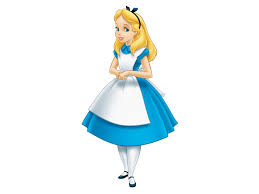

Alice was beginning to get tired by her sister on the bank and having nothing to do: once or twice she had peeped into the book her sister was reading but it had no pictures or conversations in it, "and what is the use of a book," thought Alice, "without pictures or conversations"
 BOHS